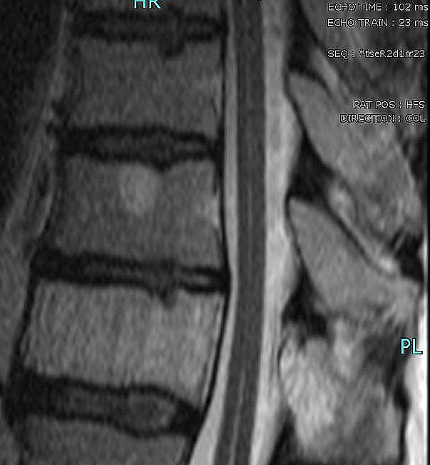

Ficha del catálogo
Hemangioma vertebral
- Sistema
- Óseo
- Modalidad
- RM
- Región
- Columna
- Dificultad
- Intermedio
El hemangioma vertebral es la lesión ósea benigna más frecuente de la columna y aparece como hallazgo casual en una proporción notable de los estudios de adultos. Está formado por canales vasculares dentro de la médula ósea grasa, con trabéculas engrosadas que soportan la carga. La inmensa mayoría son asintomáticos y no requieren ninguna actuación. Una minoría de lesiones agresivas crece hacia el conducto o hacia los elementos posteriores y puede producir compresión medular.
Técnica
Resonancia de columna con secuencias sagitales potenciadas en T1 y en T2 y cortes axiales del nivel afectado, complementada con estudio tras contraste si la lesión resulta atípica.
Qué observar
- Señal alta en secuencias potenciadas en T1 por el contenido graso de la lesión
- Señal alta también en secuencias potenciadas en T2
- Trabéculas gruesas verticales que dan aspecto de tejido rayado en el plano sagital
- Puntos densos dispersos en el corte axial correspondientes a las trabéculas
- Limitación de la lesión al cuerpo vertebral sin abombamiento del muro posterior
- Extensión al pedículo o al arco posterior y componente epidural en las formas agresivas
Hallazgos
Lesión intravertebral bien delimitada con señal alta en secuencias potenciadas en T1 y en T2 y trabéculas verticales engrosadas, sin afectación del contorno vertebral.
Perlas
La señal alta en las secuencias potenciadas en T1 es lo que permite reconocer la lesión como benigna, porque casi toda patología sustitutiva de la médula ósea reduce esa señal. Cuando un hemangioma pierde la señal alta en T1 y capta contraste de forma intensa hay que sospechar una forma agresiva y estudiar el conducto.
Diagnóstico diferencial
- Metástasis vertebral
- Señal baja en secuencias potenciadas en T1 y afectación pedicular con masa asociada.
- Cambios degenerativos de la médula ósea con contenido graso
- Se sitúan junto al platillo vertebral y no tienen trabéculas engrosadas.
- Osteoporosis focal con islote graso
- Sin trabéculas verticales visibles ni realce apreciable.
Simuladores
- Artefacto de desplazamiento químico en el borde vertebral
- Isla ósea densa
- Médula ósea grasa heterogénea del anciano
Por modalidad
- RX
- Puede mostrar las trabéculas verticales en lesiones grandes
- TC
- Los puntos densos en el corte axial son muy característicos
- RM
- Método de elección para confirmar la naturaleza grasa y valorar el conducto
Protocolo
Secuencias sagitales potenciadas en T1 y en T2 más axiales del nivel. Contraste y estudio del conducto si la lesión ocupa el arco posterior o si el paciente tiene clínica neurológica.
Clasificación
Se separan las formas típicas asintomáticas, con abundante grasa, de las formas agresivas con predominio vascular, extensión extraósea y riesgo de compresión.
Errores frecuentes
- Confundir una forma agresiva con una lesión metastásica sin valorar la matriz trabecular
- Alarmar al paciente por un hallazgo casual sin trascendencia
- No revisar el arco posterior ni el espacio epidural en lesiones grandes

hemangioma vertebral columna lesion benigna trabeculas verticales hallazgo casual resonancia grasa